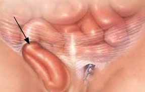

로그인
회원가입
대표전화 2001-114
병원소개
인사말
미션과비전
이념및연혁
조직도
이용안내
찾아오는길
전화번호
층별안내도
면회시간
진료안내
진료과
진료시간표
외래진료
입퇴원안내
센터정보
종합검진
건강관리
응급의료
인공신장
건강정보
전문클리닉
장비소개
건강정보
조직도
진료의뢰하기
진료협력센터소개
심장병 없는 세상을 위하여 오늘도 최선을 다하고 있습니다.
병원장 인사말
비전과 핵심가치
면회시간
주차안내
편의시설
진료예약
입퇴원안내
제증명
전화번호
장례식장
동수원병원 뉴스
병원소식
의료법인 녹산의료재단 동수원병원ㆍ동수원한방병원(이사장 변영훈)과 경희대학교(총장 한균태)는 8월 19일 경희대 국제캠퍼스 본관 대회의실에서 상호협력 및 교류협약을 체결했다. 이번 협약에 따라 양 기관 은 진료에 관한 협력체계를 구축하고, 교류 협력을 통해 구성원 의료복지 향상과 공동 발전을 도모한다.
more
공지사항
※팔달구 코로나19 백신 조기접종 위탁 의료기관 시행 안내※
more

건강정보게시판
탈장은 복부 장기를 싼 복벽이 약해져 불룩 튀어나온 경우를 말합니다.
more
장비소개
국내 최초로 초고속 촬영 검사 기능을 탑재한 시그나아키텍트는 국내 최고 사양
more
센터정보
종합검진센터
최신 기자제를 동원하여 간, 위, 직장, 대장, 난소, 유방암
건강관리센터
어느 한 분야만 취급하는 기관(측정,종합검진 등 특정한 분
응급의료센터
응급의학과 전문의가 24시간 상주하며 또한 전공
인공신장센터
신장환자들에 대한 풍부한 임상경험과 연구 실적을
척추관절센터
척추, 어깨관절, 고관절, 슬관절, 미세수술, 골절,
진료협력센터
의료기관간 상호신뢰 및 긴밀한 협조체제로 진료예약, 회신,